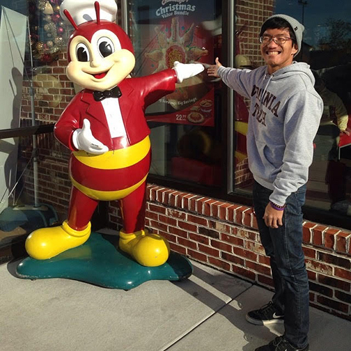
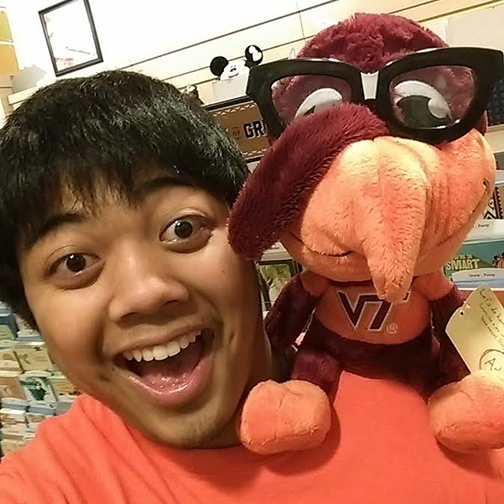

D7

D7 RepresentativeMarc Hidalgo
- Sophomore in University Studies
Contact: (757)504-5809 - Fav music genre - Indie/Alternative
- Fav food - Chicken Adobo
- Biggest fear - Heights
- Chipotle or Moes - Chipotle
- Favorite quote. - "He didn't do nothing." - Manny Pacquiao
- I like to think I'm a pretty chill guy. When I'm not studying, you might see me playing guitar or ultimate frisbee. Some things I like to do are eat downtown and watch videos/movies. So yeah.

D7 RepresentativeAJ Campanilla
- Sophomore in Business Information Technologys
Contact: andyjc63@vt.edu - If you could have any super power, what would it be? - Time control! You can check out the future or the past, change some things here and there...anything is possible in a multiverse!
- What's your bra size? - 34W 32L in centimmeters, but I only get the Filipino brands they sell at Victoria's Secret. Shh...
Celebrity crush? - TAYLORR SWIFTTT <33
Nah, but seriously, check out my room and i'll prove it. I can make the bad [girls] good for a weekend ;)- Biggest pet peeve? - When people constantly talk in acronyms and/or use the wrong word forms (Especially if they graduated high school!). "Like, OMG! Your all so dumb! Everyone accept me, everyone nose its the truth".
- Favorite youtube video? - My 1 Second Everyday freshman year at Virginia Tech!
- Hey what's up, fam! Born and raised in Springfield, Virginia, I like to spend my free time, playing video games, hanging out with some floor mates or FASA fam, or even working on my studies (ie. procrastinating). I am an eagle scout, proud Taylor Swift fanboy, and a CoD Sweaty Veteran.